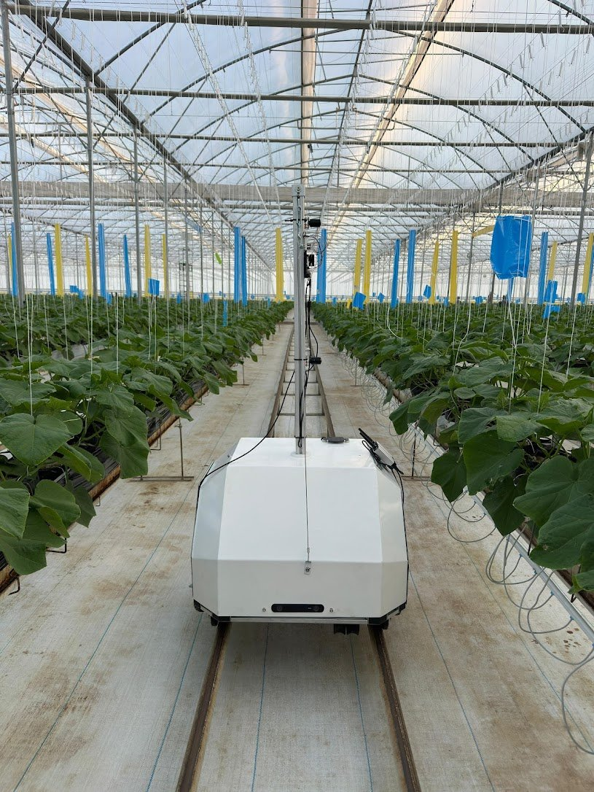
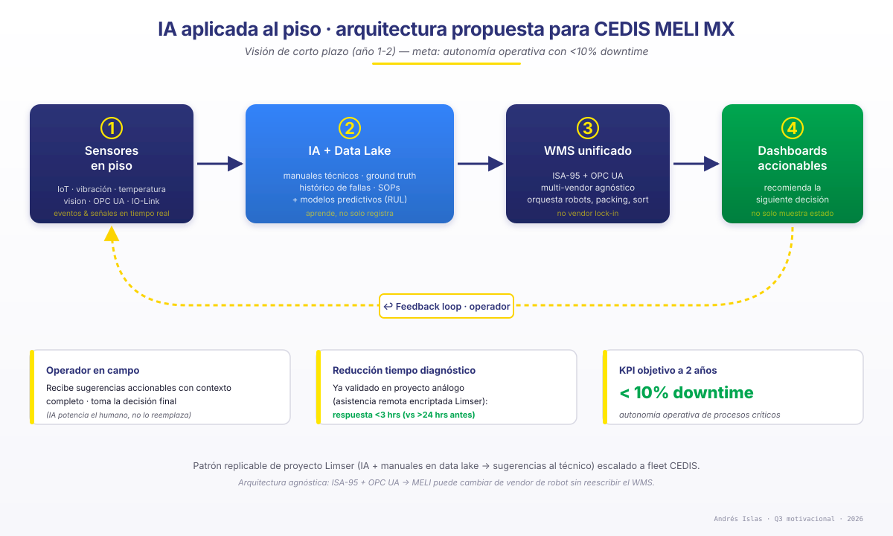

Cinco casos · cinco lentes analíticas · widgets Python en vivo para que ustedes manipulen los supuestos
y vean por qué llegamos a cada decisión. Construido en HTML interactivo en lugar de PPT.
Theory of ConstraintsAHP / TOPSISLittle's LawReal OptionsCPM + Monte CarloOPC UA / ISA-95
Antes de cada caso: 5 lentes que aplico para decidir si amerita robot.
Si la pregunta es «¿automatizar X?», la respuesta correcta a veces es «no todavía, aquí están las condiciones». Saber cuándo NO automatizar pesa tanto como saber cuándo sí.
① Operativa
¿Es bottleneck real o ruido? ¿El proceso es estable o estacional? ¿Cuál es el upside operativo (picks/hr, throughput por bahía, OEE, lead time, error rate)?
Diagnóstico: Theory of Constraints (Goldratt). Focalizar la palanca con mayor leverage marginal.
② Técnica
Fit del SKU mix, integración con WMS/MES, redundancia, mantenibilidad. ¿La tecnología es madura o nos vendemos al hype?
Arquitectura: ISA-95 + OPC UA + IO-Link como invariantes de integración.
③ Financiera
CAPEX + OPEX + costo de oportunidad + costo de retraso. NPV / IRR / payback. ¿El ROI está atado a supuestos explícitos y defensibles?
Modelo: Real Options + Monte Carlo del business case (no punto medio del Excel).
④ Talento
¿Existe pipeline local de operadores y técnicos? ¿Hay universidades cercanas formando mecatrónicos / técnicos en automatización? ¿Cuánta capacitación interna?
Single-source de partes, obsolescencia, vendor lock-in, refacciones >24mo en stock local, MTTR contractual, deuda técnica.
Marcos: RCM (SAE JA1011) + escalado por bahía con gates por POC.
Lo que la práctica enseña
Cada caso siguiente revisita estos cinco lentes. La lección recurrente que he visto en piso es que el «mejor producto» pierde si no tiene soporte, refacciones y talento operable cerca del sitio. Por eso aquí los cinco lentes se aplican juntos, no por separado.
Cómo leer este deck: cada caso lleva un widget Python embebido (PyScript) — mueve sliders, cambia pesos, ve cómo las decisiones cambian.
El PDF de respaldo en exports/business_case_andres_islas.pdf captura un escenario representativo si los widgets no cargan.
02Caso 1 · Tecnología de empaquetado
Cómo entraría a evaluar empaquetado para un FC de Mercado Envíos.
Cuatro sub-preguntas (a–d) → framework de 6 fases + scorecard AHP que pueden manipular.
El primer paso es definir el intent, no el producto.
Antes de mirar máquinas pregunto:
¿Qué KPI estamos atacando? Costo material por pack, throughput por estación, % daños, footprint, mix de SKU soportado, tiempo de ramp-up. Cada uno favorece una familia distinta de soluciones.
¿Cuál es el baseline? Cost-per-pack actual, packs/hr/estación, % de daños, % de over-pack (caja desproporcionada al producto — costo logístico y ambiental).
¿Qué SKU mix tenemos? Distribución dim-weight, fragilidad, mix de cajas vs bolsas. Si el 80% del volumen vive en 3 tamaños, una auto-box es overkill; si vive en 30 tamaños, manual no escala.
¿Cuál es el plazo del business case? Aprobación por proyecto único vs roadmap multi-sitio cambia la profundidad del análisis.
Anti-pattern frecuente: elegir "la solución que vimos en Amazon" sin que el SKU mix lo justifique. La auto-box tiene sentido cuando el mix tiene variedad dimensional alta y costo de transporte sensible al volumen (DIM weight).
Plan de trabajo en 6 fases gateadas.
#
Fase
Duración
Salida / gate
1
Discovery: intent + baseline + SKU mix
2 sem
Charter firmado + targets cuantitativos
2
Long-list de proveedores + RFI
4 sem
8–12 candidatos con datasheet
3
Visitas técnicas + due diligence (incl. soporte MX)
4 sem
Short-list 3–4 con scoring AHP
4
POC / piloto controlado (1–2 vendors)
6 sem
Métricas piloto vs targets
5
Business case + ROI defendido (Real Options)
3 sem
Deck CEO/CFO + NPV/IRR/Payback
6
Decisión + roadmap de rollout
2 sem
Go / No-go con gates por bahía
Total feasibility: ~21 semanas (~5 meses) antes de licitación/contrato. Coherente con caso 5.
Preguntas que filtran de long-list a short-list.
① Fit operativo
Rango de tamaños/materiales soportados vs nuestro mix.
Throughput máx vs requerimiento (incluye peaks de Buen Fin / Black Friday).
Datos: RFI vendors + due diligence (fase 2–3 del plan) + evidencia verificable de fuentes públicas o ofertas comerciales.
Método: AHP (Saaty 1980) — el evaluador asigna pesos por criterio, el widget los normaliza a suma=1; cada vendor entra con scores 0–100 por criterio según la rúbrica visible abajo.
Fuente: rúbrica completa (anchors 0/25/50/75/100) renderizada bajo el chart; evidencia + source links por vendor visible en el ranking detail. Vista canónica también en appendix/rubrica-ahp.html.
⚙ Scorecard AHP · muevan los pesos, vean el ranking + evidencia por vendor
La suma de pesos se normaliza automáticamente. Cada score 0–100 tiene rúbrica y evidencia visibles. Tip de chart: toolbar arriba-derecha (zoom · autoscale · download) · doble-click resetea.
Bottleneck severo en Put Away. 1.6M items/mes no se alcanza sin tocar palancas.
Aplicando Theory of Constraints: focalizamos en el cuello, no en lo que tiene cabeza. La utilización del 10% en Put Away es la pista crítica.
Fundamento
Datos: parámetros del enunciado MELI (200 items/hr/puesto, 20 puestos, 16 hr/día, 6 días/sem, util 10% en Put Away · análogo para Picking y Sorter).
Método: Theory of Constraints (Goldratt 1984) — capacidad efectiva = bruta × factor de eficiencia/utilización. Bottleneck = min{capacidad_efectiva}. Little's Law (L=λW) para WIP buffer.
Fuente: cálculos cruzados en analysis/math_casos.py (verificación numérica). Supuesto S003: «10% es utilización efectiva real, no factor de seguridad» (ver supuestos S003) — si fuera buffer, el cuello se movería a Picking.
Bottleneck = Put Away. Está casi 10× por debajo del siguiente eslabón. Con utilización 10% el target de 1.6M es inalcanzable —
no por capacidad nominal (la bruta es 1.65M) sino por la baja utilización. La pregunta no es «¿agregar puestos?» sino «¿por qué la utilización es 10%?».
Palancas sin agregar puestos (en orden de ROI marginal):
① Put Away — subir utilización palanca master
Pasar utilización 10% → 97% alcanza el 1.6M directo (ver simulador).
Root cause probable: inducciones lentas, wave-planning malo, bursts de inbound sin smoothing, o personal asignado pero ausente.
Acción: auditoría operativa Put Away 2 semanas + wave-planning rediseñado + buffer de inducción dinámico.
② Picking — eficiencia 90% → 94%
Solo 4 pp de eficiencia para cerrar el gap residual de Picking (1.54M → 1.60M). Vía: micropausas optimizadas, batch picking, slotting por velocity de SKU.
Conexión con caso 3: mejorar PPF (units/rack) tiene exactamente el mismo efecto sin tocar puestos.
③ Slotting — subir PPF (caso 3 palanca)
PPF 1.8 → 2.5 (Class-based slotting + cube velocity) eleva items/hr por estación 39% sin CAPEX nuevo. Datos + algoritmo.
④ Mantenimiento predictivo
El factor "eficiencia 90%" Picking incluye downtime no planificado. Mantenibilidad predictiva (sensores + agente IA al técnico) sube uptime y empuja eficiencia a 94%+.
⑤ NO tocar el sorter
El sorter está fuera del bottleneck (1.82M > 1.60M). Optimizar lo que no es cuello es anti-pattern — quema CAPEX sin mover el throughput agregado.
Little's Law · cola pick→sort
A 1.6M items/mes (~2,532 items/hr efectivo) con SLA 3.5 hr:
≈ 7,973items en WIP pick→sort
L = λ × W × factor_seguridad. Define el tamaño del buffer y la velocidad de respuesta del sorter.
⚙ Simulador de capacidad · muevan utilización, eficiencia y horas
Las barras rojas marcan el bottleneck en cada combinación. Tip de chart: toolbar arriba-derecha (zoom · autoscale) · doble-click resetea.
—Put Away efect.
—Picking efect.
—Sorter cap.
—Bottleneck
—¿Alcanza?
Cargando Python...
Verificación matemática
Cálculos cruzados en analysis/math_casos.py — el widget reproduce exactamente esos números.
Goldratt — The Goal (Theory of Constraints).
Little's Law (L = λW) — queueing theory aplicada al buffer pick→sort.
Footprint: Picking 28.3 m²/puesto · Put Away 22.5 m²/puesto (densidad razonable vs benchmarks STP industria 25–50 m²/estación).
04Caso 3 · Picking robótico
301 items/hr/estación. PPF (units/rack) es la palanca con mayor leverage.
El enunciado fija la secuencialidad: R2R inicia después de la confirmación. T_rack = OWP + OWS + R2R = 21.5 s.
Fundamento
Datos: OWP=7s, OWS=6s, R2R=8.5s, PPF=1.8 (parámetros del enunciado MELI).
Por qué secuencial (no paralelo): el enunciado dice «una vez que el operador confirmó que retiró el/los producto(s) de la estantería, los robots ya pueden iniciar sus movimientos». Si fuera paralelo, T_rack=max(OWP+OWS, R2R)=13s y racks/hr=277 (en lugar de 167). El widget permite explorar ambas hipótesis. Supuesto S004 declarado.
T_rack
21.5 sOWP + OWS + R2R
7 + 6 + 8.5 = 21.5 s — secuencial porque R2R inicia tras confirmación del operador.
Racks / hr
167.43600 / 21.5
Si la cola de robots no se vacía: este es el techo absoluto de presentaciones.
Items / hr · estación
301.4167.4 × 1.8 PPF
Productividad promedio por estación inducida.
Benchmark industria: Goods-to-Person / Shelves-to-Person estación promedia 300–350+ picks/hr con accuracy ~99.99% (fuentes: atomoving.com 2026, Productiv warehouse benchmarks). Nuestro baseline 301.4 está en el cuartil inferior → headroom claro vía PPF.
Por qué PPF es la palanca correcta: subir PPF 1.8 → 2.5 da +39% items/hr sin tocar el ciclo del robot ni el operador.
Solo requiere mejor slotting (Class-based + cube velocity). Es la palanca con mejor ROI marginal porque no necesita CAPEX nuevo.
⚙ Simulador de productividad · sensibilidad por palanca
El delta % se calcula contra el baseline (301.4 items/hr). Tip de chart: toolbar arriba-derecha (zoom · autoscale) · doble-click resetea.
—T_rack (s)
—Racks/hr
—Items/hr
—Δ vs baseline
Cargando Python...
Conexión con casos 2 y 4
Caso 2 ↔ caso 3: subir PPF en caso 3 es la mejor forma de cerrar el gap residual de picking en caso 2 (sin agregar puestos, sin tocar el robot).
Caso 4 ↔ caso 3: el mix SKU + curva de velocity (caso 4) es el INPUT para optimizar slotting y subir PPF (caso 3).
Benchmarks industria Goods-to-Person: 300–350+ picks/hr/estación con 99.99% accuracy (rate consistente con nuestro cálculo).
05Caso 4 · Plan data-driven
Cómo extraería y presentaría los datos para defender el plan de expansión.
Arquitectura asumida → SQL skeletons → dashboard con 4 vistas → insight slide para el líder.
Fundamento
Datos: stack hipotético MELI declarado como supuesto S001 (WMS custom o SAP EWM derivado → Kafka → Data Lake → Warehouse → BI). El stack real puede variar, pero la arquitectura propuesta es válida para cualquier vendor común.
Método: SQL skeletons son plantillas — agregaciones canónicas para 3 vistas (flujo semanal, peak intradiario, mix SKU). El framework analítico subyacente es ABC + XYZ (Pareto + variabilidad) sobre mix SKU + dim-weight (UPS/FedEx DIM divisor 5000).
Fuente: stack ratificable con equipo Data Platform de MELI (ticket SSO scope mes cerrado). Score de fit para tech = combinación ponderada de throughput utilización × stability-index × footprint × CAPEX-range (metodología similar a AHP caso 1).
a) Cómo lo haría: arquitectura asumida
Stack asumido (declarado como supuesto en supuestos.html):
WMS (custom MELI / SAP EWM derivado)
↓ Kafka events
Data Lake (S3 / GCS + Glue / Athena)
↓ ETL incremental
Data Warehouse (Redshift / Snowflake / BigQuery)
↓ semantic layer
BI (Looker / Tableau / Metabase) + Streamlit ad-hoc
Acceso: ticket al equipo Data Platform · role-based access SSO · scope definido (mes cerrado anterior, todos los FC MX).
Tres queries que definen el plan
① Curvas semanales entrada/salida por FC
SELECT fc_id, DATE_TRUNC('week', event_ts) AS week,
event_type, -- inbound | outbound
SUM(items) AS items, SUM(volume_m3) AS vol,
SUM(weight_kg) AS weight
FROM operational_events
WHERE event_ts >= DATE_TRUNC('month',
CURRENT_DATE - INTERVAL '1 month')
AND event_ts < DATE_TRUNC('month', CURRENT_DATE)
GROUP BY 1, 2, 3;
② Curva intradiaria (peaks)
SELECT fc_id,
EXTRACT(dow FROM event_ts) AS day_of_week,
EXTRACT(hour FROM event_ts) AS hour,
AVG(items_per_hour) AS avg_thr,
PERCENTILE_CONT(0.95) WITHIN GROUP
(ORDER BY items_per_hour) AS p95_thr
FROM hourly_throughput
WHERE month = LAST_MONTH
GROUP BY 1, 2, 3;
③ Mix SKU (volumen, peso, categoría)
SELECT fc_id, sm.category,
WIDTH_BUCKET(sm.dim_weight_kg, 0, 50, 10) AS dim_bucket,
COUNT(DISTINCT sm.sku_id) AS sku_count,
SUM(of.items) AS items_processed,
SUM(of.items * sm.weight_kg) AS total_weight
FROM order_fulfillment of
JOIN sku_master sm USING (sku_id)
WHERE of.fc_id IS NOT NULL
GROUP BY 1, 2, 3;
Validaciones
Cross-check con KPIs ya reportados (sanity).
Excluir 2 sem de sale spike (Buen Fin / Hot Sale).
Solo ciclos completos.
PII: agregar a nivel SKU-category, no usuario.
b) Cómo lo presentaría al líder
Dashboard de 4 vistas (Streamlit o Looker)
Resumen ejecutivo: tabla por FC con throughput total, hr peak, top-3 categorías, score de fit para la tech vs criterios multi-lente.
Flujo semanal por FC: stacked area inbound vs outbound + anomalía detection.
Heatmap peaks intradiarios: hr × día × FC para staffing.
Insight slide para el líder: «FC-X muestra utilización 60% pero throughput plano vs FC-Y. Hipótesis: bottleneck en sortation post-pick.
Recomendación: profundizar antes de expandir Y a más FCs.» Recomendación accionable > dashboard pasivo.
06Caso 5 · Roadmap feasibility-a-licitación
~28 semanas a contrato firmado · ~46 semanas a steady state.
CPM + Real Options · gates por business case · Monte Carlo de duraciones.
#
Fase
Duración
Paralelo con
Gate / output
1
Definición problema + alineación stakeholders
2 sem
—
Charter firmado
2
Análisis baseline + KPIs target
3 sem
parcial con (3)
Baseline doc + targets
3
Long-list proveedores + RFI
4 sem
parcial con (2)
Long-list 8–12
4
Visitas técnicas + due diligence (incl. soporte MX)
4 sem
—
Short-list 3–4
5
POC / piloto con 1–2 proveedores
6 sem
—
Métricas piloto
6
Business case + ROI defendido
3 sem
últimas 2 sem con (5)
Deck CEO/CFO · NPV/IRR
7
Aprobación stakeholders senior
2 sem
—
Go / No-Go
8
Especificación técnica + RFP
3 sem
—
RFP doc
9
Licitación + selección
4 sem
—
Vendor seleccionado
10
Negociación contrato
3 sem
—
Contrato firmado
—
Fabricación (dado: 3 meses)
12 sem
—
Sistema fabricado
11
Preparación de sitio
4 sem
con fabricación
Sitio listo
12
Instalación + commissioning
4 sem
—
Sistema en piso
13
Ramp-up + validación KPIs
6 sem
—
Steady state
Fundamento de duraciones
Discovery + aprobación (fases 1–4 y 7) · 2–4 sem por fase, alineadas con ciclos de chartering y gating de proyectos per PMI PMBOK 7th ed. (project management standard).
POC / piloto (fase 5) · 6 sem · derivado de Modula 2025 case studies + MHI Annual Report para proyectos roboticization de complejidad media (instalación 2 sem + datos productivos 3-4 sem).
Business case (fase 6) · 3 sem · alinea con típico ciclo de approval CFO/CEO Fortune 500 LATAM.
Licitación + negociación (fases 8–10) · 3–4 sem · benchmark vendor management Fortune 500 MX; supuesto a calibrar con datos internos MELI.
Fabricación · 12 sem · dado por el enunciado.
Ramp-up + validación (fase 13) · 6 sem · estándar industria post-commissioning robotics para alcanzar steady state (typical learning curve 4–8 sem).
Pre-fabricación (≈ 28 sem)
Discovery → Aprobación + Contrato. La Fase 7 es el gate Real Options: si POC no llega, no se compromete CAPEX de fabricación.
A steady state (≈ 46 sem)
Incluye fabricación + sitio + instalación + ramp-up. ~11 meses total. La sobreposición sitio↔fabricación ahorra 4 semanas.
⚙ Gantt simulator · ajusten duraciones, vean el go-live y el critical path
PERT (US Navy 1958): cada fase con distribución triangular ±20%. Monte Carlo n=500. Tip de chart: toolbar arriba-derecha (zoom · pan · autoscale para volver a vista completa) · doble-click resetea.
—Sem a contrato
—Sem a steady state
—Monte Carlo p50
—Monte Carlo p90
Cargando Python...
Cómo leer p50 vs p90
p50 (mediana) = expectativa interna realista para planificación. En el 50% de las simulaciones, el proyecto termina antes de esa fecha. Es lo que asumo internamente.
p90 (percentil 90) = el compromiso que hago al CEO. En 9 de cada 10 escenarios el proyecto termina antes. Si digo p90 y llego antes, gano credibilidad; si digo p50 y llego después, pierdo. Diferencia típica p50→p90: 4–6 sem.
Por qué ±20% triangular: PERT 3-point estimation con variance ±20% es el rango estándar para proyectos de complejidad media. Para POC pioneer (tech sin precedente interno) se sube a ±30%; para tareas rutinarias bajaría a ±10%.
Conceptos referenciables
CPM (Kelley & Walker 1959) + PERT (US Navy 1958).
Real Options (Trigeorgis): gates por business case evitan comprometer CAPEX si POC malo.
Risk-adjusted timeline (Monte Carlo de duraciones): el p90 dice "no prometan al CEO antes de X".
07Preguntas adicionales
Motivacionales · respuestas completas.
Las mismas respuestas del PDF formal, en formato narrativo con material visual de proyectos verificables.
📄 ¿Prefieren leerlo en PDF?
El documento formal de 4 páginas también va adjunto al email. Misma redacción + tipografía Inter institucional.
Lo que me mueve cada día es crear e innovar. En cada rol técnico que he tomado he buscado que mi tiempo en esa empresa fuera un antes y un después. Un ejemplo concreto: en Limser construí un sistema de asistencia remota encriptado para mantenimiento de software de equipos de alto valor; los ingenieros dejaron de viajar a sitio, la empresa redujo viáticos, y el tiempo de respuesta bajó a menos de tres horas. Sigo recibiendo mensajes de colaboradores que agradecen que ese sistema les facilitó la vida y el balance con su familia. Otro caso es la última startup, donde escribí desde cero la pila de algoritmos para que AGVs navegaran en invernaderos — un escenario donde la mayoría de los AGVs comerciales fallan —; esos robots están hoy en producción, ayudando a la seguridad alimentaria, que es uno de los retos humanos más grandes. También aporto cuando no hay dinero de por medio: contribuciones a nav2 de ROS 2, porque me importa que la robótica esté cada vez más presente en la vida cotidiana.
En Mercado Libre me interesa exactamente eso: subir la vara. No hablo solo de plantas automatizadas, sino de plantas autónomas; usar gemelos digitales para iterar configuraciones y procesos en software antes de tocar el piso; diseñar arquitecturas a prueba de balas, donde si un robot falla, las celdas vecinas redistribuyen carga dinámicamente y la línea no se para. Sumado a esto, el reto de escala (10–100× de lo que he tocado), el trabajo cross-equipo con Brasil regional, y la oportunidad de estar en MX cuando la receta de innovación aún se está escribiendo, hacen que sea el rol al que quiero entrar.
2 ¿Cuál es tu mayor fortaleza y tu mayor debilidad?
Fortaleza: tomar problemas concretos y entregar la solución completa — desde definir la arquitectura hasta escribir el código que la sostiene. En automatización industrial pesada dirigí el delivery de transfer cars de 90 toneladas certificadas TÜV SIL-2 a clientes Fortune 500, con un equipo de seis ingenieros. En paralelo, en la última startup, escribí cada línea del stack de control y fusión sensorial de un AGV agrícola en seis semanas con un BOM de $3K USD, y defendí el unit economics ante VCs (hectáreas → ROI año 1). Esa intersección entre depth técnica y criterio de inversión es la base con la que llego al rol.
Debilidad: mi mayor debilidad ha sido siempre el querer más antes de tiempo. Cuando estaba arrancando como ingeniero, antes de que mi primera empresa funcionara, me obsesioné con ser más de lo que era — rechazaba puestos junior pensando que merecía algo mayor, me empujaba a cosas para las que aún no estaba listo. Terminé en quiebra, y la quiebra no fue solo financiera: me costó la relación con mi pareja en ese momento, y me obligó a parar.
Ese alto forzado fue lo que cambió las cosas. Por primera vez tuve que mirar de frente cómo me estaba autosaboteando, y un libro me ayudó a ponerle nombre: Ego Is the Enemy, de Ryan Holiday. Después vinieron los hábitos prácticos — usar matrices de riesgo antes de comprometerme con un siguiente paso, planear por etapas en lugar de saltármelos, ser explícito conmigo mismo sobre lo que estaba listo para asumir. Pero el cambio de fondo fue aprender a escuchar al ego como señal, no como impulso.
Hoy esa lección se manifiesta en cosas concretas. Soy padre de familia presente sin abandonar mis proyectos. Sé cuándo decir no a algo que parece atractivo pero no encaja. Y en este case en particular: no me pongo títulos a mí mismo — prefiero que la lectura del rango la haga el equipo después de ver el trabajo.

AGV agrícola navegando en invernadero · stack de control y fusión sensorial escrito desde cero en 6 semanas, BOM USD $3K
3 Si obtienes el puesto, ¿cómo te ves dentro de 3 años?
Quiero crecer dentro de MELI, pero lo que de verdad me importa no es la siguiente etiqueta en el organigrama — es el alcance del impacto. Quiero llegar a un punto donde mi visión influya no solo en cómo operamos sino en lo que MELI crea, elige y despliega.
A corto plazo, los próximos dos años los veo enfocados en algo concreto y medible: la autonomía operativa de varios procesos críticos en CEDIS con menos del 10% de downtime. Eso significa más que automatización aislada — significa IA aplicada al piso. Ya hice algo análogo: construí una IA que supervisaba las tareas diarias del equipo de mantenimiento, alimentada por un data lake con manuales técnicos y ground truth, y entregaba sugerencias accionables al técnico en campo. Eso redujo tiempos de diagnóstico y dejó al técnico hacer lo que un humano hace mejor: tomar la decisión final con contexto completo. En MELI ese principio puede escalar mucho — sensores en piso + IA + WMS unificado + dashboards que no solo muestran el estado, sino que recomiendan la siguiente decisión.
A tres años quiero estar contribuyendo a la arquitectura unificada de toda la red MX bajo ISA-95 + OPC UA, mentoreando a specialists juniors, y ayudando a definir la siguiente generación de FCs — empezando por homologar los CEDIS principales con los secundarios, donde aún no se ha tocado, para que ningún sitio quede rezagado.
El horizonte que me mantiene mirando lejos lo describe The Wave, del cofundador de DeepSeek: tres olas tecnológicas que están reconfigurando la economía. La primera son los LLMs — donde estamos ahora. La segunda son los robots, particularmente los VLA aspirando a generalistas — donde nos estamos moviendo, y a la que MELI ya se está subiendo con casos como Cajamar y el acuerdo con Agility Robotics. La tercera, que viene como consecuencia natural del volumen de datos que esos robots generan, es la computación cuántica como nueva forma de procesar simulaciones a una granularidad que el cómputo clásico no alcanza.
Quiero ayudar a MELI a subirse a esa tercera ola cuando llegue, no de reactivo. La cuántica abre ventanas concretas: simulación de procesos a granularidad sin precedentes, diseño óptimo de warehouses, distribución dinámica de activos, e incluso modelos para homologar la operación robótica entre CEDIS principales y secundarios bajo restricciones que hoy son intratables. No es trabajo del primer año, pero las decisiones de arquitectura que tomemos ahora — qué datos capturamos, qué interfaces estandarizamos, qué hipótesis modelamos — determinan si estamos listos cuando esa ola llegue. En esta carrera tecnológica, el primero en aterrizar la aplicación real gana market share. Quiero aportar exactamente eso a Mercado Libre.

Arquitectura propuesta · IA aplicada al piso CEDIS · meta corto plazo (año 1-2): autonomía operativa con <10% downtime · patrón replicable del proyecto Limser escalado a fleet
4 A challenge I overcame in English, per brief
The challenge came early in my time at Limser. The customer was Harsco, a metals services company whose plant directors reported into Brazil. By the time I joined the project, the relationship had deteriorated: the AGVs we were building for their foundry weren't progressing as expected, Limser didn't have a clear methodology to push them through, and Miguel from Harsco — the customer lead — was visibly upset. The first time I walked into the plant in person, the meeting opened with reproaches, not introductions.
I made a deliberate choice: rather than patch the AGV development plan and hope, I proposed standing up an automation department from scratch inside Limser, with myself accountable. The customer agreed to give us a chance. I rebuilt the development methodology around the actual realities of the foundry — the safety risks of running automated equipment around induction furnaces, the operational consequences if one AGV failed mid-shift, the criticality of integrating the AGVs with their WMS so a load-cell-based weighing system could feed inventory and metal-quality data downstream to Ternium, their downstream customer. The pressure was sharp: in side conversations with the LatAm director of procurement, he told me that the Harsco plant was internally being debated for closure, and that what we were delivering — AGVs plus the integrated weighing/WMS narrative — was the lever they were using to negotiate a ten-year operational extension with Ternium.
I built the team from people I had met in collegiate robotics teams, who shared the same drive. The project ran on a tight budget vs. a tight timeline, and the trade-off was managed week by week between scope, overtime and progress. On the last visit I made to the plant, Miguel and I had coffee, shook hands, and started talking about future projects. The plant kept operating. Limser is still working with Harsco today — on cranes now, a different scope. That outcome taught me what it really means to take ownership of something that started badly, to step into a high-pressure customer relationship and let the work do the speaking. It is also the kind of relationship I would want to build with the MELI operations leaders in Brazil — starting calm, showing up, and proving the work case by case.
Transfer car 90 T en operación · proyecto Limser × Harsco · certificación TÜV SIL-2 con sensores SICK
99Cierre · siguiente nivel
Lo que decidí dejar en appendix — para profundizar si quieren.
Antes de elegir el robot, pregunté si debía ser un robot. Cuando sí, las cinco lentes (operativa · técnica · financiera · talento · riesgo) se aplicaron juntas, no por separado.
El gap de escala (fleet a tamaño MELI) lo declaro directamente y enseño la adyacencia para cubrirlo, no lo escondo.
El deliverable es deck y herramienta a la vez — si tiene sentido, en la entrevista podemos abrir el simulador y discutir escenarios juntos en vivo.
Gracias por el espacio para presentar el case. Quedo atento a sus comentarios.